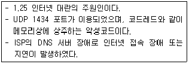
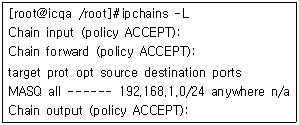
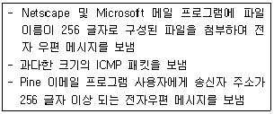

인터넷보안전문가-2급 (2007-04-01 기출문제)
1과목: 정보보호개론
1. 다음 중 비대칭형 암호화 방식은?
- RC2
- SEED
- DES
- Diffie-Hellman
(정답률: 알수없음)

2. 공인인증서란 인터넷 상에서 발생하는 모든 전자거래를 안심하고 사용할 수 있도록 해주는 사이버 신분증이다. 공인인증서에 반드시 포함되어야 하는 사항으로 옳지 않은 것은?
- 가입자 이름
- 유효 기간
- 일련 번호
- 용도
(정답률: 알수없음)
3. 암호 목적에 대한 설명이다. 옳지 않은 것은?
- 비밀성(Confidentiality) : 허가된 사용자 이외 암호문 해독 불가
- 무결성(Integrity) : 메시지 변조 방지
- 접근 제어(Access Control) : 프로토콜 데이터 부분의 접근제어
- 부인봉쇄(Non-Repudiation) : 송수신 사실 부정방지
(정답률: 알수없음)
4. 전자 서명법 상 대한민국 최상위 인증기관은?
- 금융결제원
- 증권전산원
- 한국정보인증주식회사
- 한국정보보호진흥원(구 한국정보보호센터)
(정답률: 알수없음)
5. 다음 정보보안과 관련된 행위 중 법률적으로 처벌할 수 없는 행위는?
- 남의 컴퓨터의 공유자원을 열어서 업무와 관련된 자료를 삭제한 행위
- 정부기관의 DB 자료를 임의로 수정한 행위
- 경품응모행사중인 회사의 웹서버 프로그램 허점을 이용, 경품응모 당첨 확률을 높인 행위
- 컴퓨터 바이러스를 제작하여 소스를 공개한 행위
(정답률: 알수없음)
6. 다음 중 해커의 공격에 해당되는 것으로 옳지 않는 것은?
- 가로막기
- 위조
- 비밀성
- 변조
(정답률: 80%)
7. 5명의 사용자가 대칭키(Symmetric Key)를 사용하여 주고받는 메시지를 암호화하기 위해서 필요한 키의 총 개수는?
- 2개
- 5개
- 7개
- 10개
(정답률: 알수없음)
8. 인터넷상에서 시스템 보안 문제는 중요한 부분이다. 보안이 필요한 네트워크 통로를 단일화하여 이 출구를 보안 관리함으로써 외부로부터의 불법적인 접근을 막는 시스템은?
- 해킹
- 펌웨어
- 크래킹
- 방화벽
(정답률: 알수없음)
9. 악성 프로그램에 대한 설명으로 옳지 않은 것은?
- 트랩도어 프로그램은 정당한 인증 과정 없이 시스템에 대한 액세스 권한을 획득하게 하는 프로그램이다.
- 논리 폭탄은 일정한 조건이 만족되면 자료나 소프트웨어를 파괴하는 프로그램이 삽입된 코드이다.
- 트로이 목마 프로그램은 피상적으로 유용한 프로그램으로 보이나, 이것이 실행되었을 경우 원하지 않거나 해로운 기능을 수행하는 코드가 숨어 있는 프로그램이다.
- 바이러스는 악성 프로그램의 일종으로써, 다른 프로그램을 변경하며, 전염성은 없으나 감염된 시스템을 파괴할 수 있다.
(정답률: 알수없음)
10. 다음은 어떠한 바이러스에 대한 설명인가?

- Michelangelo
- Trojan Horse
- Worm.SQL.Slammer
- Nimda
(정답률: 알수없음)
2과목: 운영체제
11. Linux 시스템에서 파티션 추가 방법인 “Edit New Partition” 내의 여러 항목에 대한 설명으로 옳지 않은 것은?
- Type - 해당 파티션의 파일 시스템을 정할 수 있다.
- Growable - 파티션의 용량을 메가 단위로 나눌 때 실제 하드 디스크 용량과 차이가 나게 된다. 사용 가능한 모든 용량을 잡아준다.
- Mount Point - 해당 파티션을 어느 디렉터리 영역으로 사용할 것인지를 결정한다.
- Size - RedHat Linux 9.0 버전의 기본 Size 단위는 KB이다.
(정답률: 알수없음)
12. Windows 2000 Server가 인식할 수 없는 시스템 디스크 포맷은?
- NTFS
- EXT2
- FAT16
- FAT32
(정답률: 알수없음)
13. Windows 2000 Server의 사용자 계정 중 해당 컴퓨터에서만 사용되는 계정으로, 하나의 시스템에서 로그온을 할 때 사용되는 계정은?
- 로컬 사용자 계정(Local User Account)
- 도메인 사용자 계정(Domain User Account)
- 내장된 사용자 계정(Built-In User Account)
- 글로벌 사용자 계정(Global User Account)
(정답률: 알수없음)
14. Windows 2000 Server의 DNS(Domain Name System) 서비스 설정에 관한 설명으로 가장 옳지 않은 것은?
- 정방향 조회 영역 설정 후 반드시 역방향 조회 영역을 설정해 주어야 한다.
- Windows 2000 Server는 고정 IP Address를 가져야 한다.
- Administrator 권한으로 설정해야 한다.
- 책임자 이메일 주소의 at(@)은 마침표(.)로 대체된다.
(정답률: 알수없음)
15. 웹 사이트가 가지고 있는 도메인을 IP Address로 바꾸어 주는 서버는?
- DHCP 서버
- FTP 서버
- DNS 서버
- IIS 서버
(정답률: 알수없음)
16. Windows 2000 Server의 계정정책 중에서 암호가 필요 없도록 할 경우에 어느 부분을 수정해야 하는가?
- 최근 암호 기억
- 최대 암호 사용기간
- 최소 암호 사용기간
- 최소 암호 길이
(정답률: 알수없음)
17. DNS(Domain Name System) 서버를 처음 설치하고 가장 먼저 만들어야 하는 데이터베이스 레코드는?
- CNAME
- HINFO(Host Information)
- PTR(Pointer)
- SOA(Start Of Authority)
(정답률: 알수없음)
18. 기존 서버의 램(256MB)을 512MB로 업그레이드 했는데, 서버 상에서는 계속 256MB로 인식하는 문제가 발생하였다. 올바른 해결 방법은?
- “lilo.conf” 파일 안에 append="mem=512M"을 추가한다.
- “/etc/conf.memory” 라는 파일을 만들어서 append="mem=512M"을 추가한다.
- SWAP 영역을 비활성화 시킨 다음 재부팅 한다.
- “/proc/sys/memory” 파일 안에 “512”이라는 값을 넣는다.
(정답률: 알수없음)
19. Linux 시스템 파일의 설명 중 가장 옳지 않은 것은?
- /etc/passwd - 사용자 정보 파일
- /etc/fstab - 시스템이 시작될 때 자동으로 마운트 되는 파일 시스템 목록
- /etc/motd - 텔넷 로그인 전 나타낼 메시지
- /etc/shadow - 패스워드 파일
(정답률: 알수없음)
20. Linux에서 "ls -al" 명령에 의하여 출력되는 정보로 옳지 않은 것은?
- 파일의 접근허가 모드
- 파일 이름
- 소유자명, 그룹명
- 파일의 소유권이 변경된 시간
(정답률: 알수없음)
21. Linux의 기본 명령어들이 포함되어 있는 디렉터리는?
- /var
- /usr
- /bin
- /etc
(정답률: 77%)
22. VI(Visual Interface) 에디터에서 편집행의 줄번호를 출력해주는 명령은?
- :set nobu
- :set nu
- :set nonu
- :set showno
(정답률: 알수없음)
23. Windows 2000 Server에서 그룹은 글로벌 그룹, 도메인 그룹, 유니버설 그룹으로 구성되어 있다. 도메인 로컬 그룹에 대한 설명으로 옳지 않은 것은?
- 도메인 로컬 그룹이 생성된 도메인에 위치하는 자원에 대한 허가를 부여할 때 사용하는 그룹이다.
- 내장된 도메인 로컬 그룹은 도메인 제어기에만 존재한다. 이는 도메인 제어기와 Active Directory에서 가능한 권한과 허가를 가지는 그룹이다.
- 내장된 로컬 도메인 그룹은 "Print Operators", "Account Operators", "Server Operators" 등이 있다.
- 주로 동일한 네트워크를 사용하는 사용자들을 조직하는데 사용된다.
(정답률: 알수없음)
24. Linux 시스템이 작동되면서 계속 수정되고 변경되는 파일들을 위한 디렉터리는?
- /var/lib
- /var/cache
- /var/local
- /var/log
(정답률: 알수없음)
25. Linux 구조 중 다중 프로세스·다중 사용자와 같은 UNIX의 주요 기능을 지원·관리하는 것은?
- 커널(Kernel)
- 디스크(Disk)
- 쉘(SHELL)
- X Window
(정답률: 알수없음)
26. 다음 중 현재 사용하고 있는 쉘(Shell)을 확인해 보기 위한 명령어는?
- echo $SHELL
- vi $SHELL
- echo &SHELL
- vi &SHELL
(정답률: 알수없음)
27. Linux 시스템에서 네트워크 환경 설정 및 시스템 초기화에 연관된 파일들을 가지는 디렉터리는?
- /root
- /home
- /bin
- /etc
(정답률: 알수없음)
28. Telnet을 이용해서 원격으로 서버에 있는 a.txt 파일을 VI 에디터로 편집하던 중 갑자기 접속이 끊어졌다. 다시 접속하여 a.txt 파일을 열었더니, a.txt 파일이 열리기 전에 한 페이지 가량의 에러 메시지가 출력된 후 Enter 키를 눌러야만 a.txt 파일이 열린다. 이 에러를 복구하기 위해서 VI 에디터를 실행시킬 때 가장 적합한 옵션은?
- vi a.txt
- vi -recover a.txt
- vi -continue a.txt
- vi -r a.txt
(정답률: 알수없음)
29. 삼바 데몬을 Linux에 설치하여 가동하였을 때 열리는 포트로 알맞게 나열한 것은?
- UDP 137, 139
- TCP 137, 139
- TCP 80, 25
- UDP 80, 25
(정답률: 알수없음)
30. Linux 시스템의 “ipchains”을 설정하려고 할 때 올바른 명령어는?

- ipchains -A forward -j MASQ -s 192.168.1.0/255.255.255.0
- ipchains -A input -j MASQ -s 192.168.1.0/24 -d 0/0
- ipchains -A forward -J MASQ -s 192.168.1.0/24 -d 0/0
- ipchains -A forward -J MASQ -s 192.168.1.0/255.255.255.0 -d 0.0.0.0/0
(정답률: 알수없음)
3과목: 네트워크
31. OSI 7 Layer 모델에서 오류 검출 기능이 수행되는 계층은?
- 물리 계층
- 데이터링크 계층
- 네트워크 계층
- 응용 계층
(정답률: 알수없음)
32. LAN에서 사용하는 전송매체 접근 방식으로 일반적으로 이더넷(Ethernet) 이라고 불리는 것은?
- Token Ring
- Token Bus
- CSMA/CD
- Slotted Ring
(정답률: 알수없음)
33. X.25 프로토콜에서 회선 설정, 데이터 교환, 회선 종단 단계를 가지며, 패킷의 종단 간(End-to-End) 패킷 전송을 위해 사용되는 방식은?
- 데이터 그램 방식
- 회선 교환 방식
- 메시지 교환 방식
- 가상 회선 방식
(정답률: 알수없음)
34. Fast Ethernet의 주요 토플로지로 가장 올바른 것은?
- Bus 방식
- Star 방식
- Cascade 방식
- Tri 방식
(정답률: 알수없음)
35. 전화망에 일반적으로 Twisted-Pair Cable을 많이 사용한다. Twisted-Pair Cable을 꼬아 놓은 가장 큰 이유는?
- 수신기에서 잡음의 효과를 감소하기 위하여
- 관리가 용이하게 하기 위하여
- 꼬인 선의 인장 강도를 크게 하기 위하여
- 구분을 용이하게 하기 위하여
(정답률: 알수없음)
36. 네트워크에 스위치 장비를 도입함으로서 얻어지는 효과로 가장 옳지 않은 것은?
- 패킷의 충돌 감소
- 속도 향상
- 네트워크 스니핑(Sniffing) 방지
- 스푸핑(Spoofing) 방지
(정답률: 60%)
37. 라우팅에서 최단 경로의 의미는?
- 가장 가격이 싼 경로
- 가장 지연이 짧은 경로
- 가장 작은 홉 수를 가진 경로
- 가, 나, 다 중 하나 이상의 결합을 바탕으로 경비(Cost)를 결정하여, 경비가 최소가 되는 경로
(정답률: 알수없음)
38. HDLC 프로토콜에서 주국(Primary Station)과 종국(Secondary Station)의 관계이면서, 종국이 주국의 허락 하에만 데이터를 전송할 수 있는 통신 모드는?
- 정규 응답 모드(Normal Response Mode)
- 비동기 응답 모드(Asynchronous Response Mode)
- 비동기 균형 모드(Asynchronous Balanced Mode)
- 혼합 모드(Combined Mode)
(정답률: 알수없음)
39. 네트워크 주소 중 B Class 기반의 IP Address로 옳지 않은 것은?
- 139.39.60.101
- 203.34.1.12
- 187.124.70.87
- 155.98.200.100
(정답률: 알수없음)
40. 라우팅 되지 않는 프로토콜(Non-Routable Protocol)은?
- TCP/IP, DLC
- NetBEUI, TCP/IP
- IPX/SPX, NetBEUI
- NetBEUI, DLC
(정답률: 알수없음)
41. 다음 중 TCP/IP Sequence Number(순서 번호)가 시간에 비례하여 증가하는 운영체제는?
- HP-UX
- Linux 2.2
- Microsoft Windows
- AIX
(정답률: 알수없음)
42. 다음 중 계층이 다른 프로토콜은?
- FTP
- SMTP
- HTTP
- IP
(정답률: 알수없음)
43. 패킷 내부의 ICMP 메시지로 옳지 않은 것은?
- 에코 요청 및 응답
- 패킷의 손실과 손실량
- 목적지 도달 불가
- 시간 초과
(정답률: 알수없음)
44. TCP 포트 중 25번 포트가 하는 일반적인 역할은?
- Telnet
- FTP
- SMTP
- SNMP
(정답률: 알수없음)
45. TCP/IP 프로토콜을 이용한 네트워크상에서 병목현상(Bottleneck)이 발생하는 이유로 가장 옳지 않은 것은?
- 다수의 클라이언트가 동시에 호스트로 접속하여 다량의 데이터를 송/수신할 때
- 불법 접근자가 악의의 목적으로 대량의 불량 패킷을 호스트로 계속 보낼 때
- 네트워크에 연결된 호스트 중 다량의 질의를 할 때
- 호스트와 연결된 클라이언트 전체를 포함하는 방화벽 시스템이 설치되어 있을 때
(정답률: 알수없음)
4과목: 보안
46. 스머프 공격(Smurf Attack)이란?
- 두개의 IP 프래그먼트를 하나의 데이터 그램인 것처럼 하여 공격 대상의 컴퓨터에 보내면 대상 컴퓨터가 받은 두개의 프래그먼트를 하나의 데이터 그램으로 합치는 과정에서 혼란에 빠지게 만드는 공격이다.
- 서버의 버그가 있는 특정 서비스의 접근 포트로 대량의 문자를 입력하여 전송하면 서버의 수신 버퍼가 넘쳐서 서버가 혼란에 빠지게 만드는 공격이다.
- 서버의 SMTP 서비스 포트로 대량의 메일을 한꺼번에 보내어 서버가 그것을 처리하지 못하게 만들어 시스템을 혼란에 빠지게 하는 공격이다.
- 공격 대상의 컴퓨터에 출발지 주소를 공격하고자 하는 컴퓨터의 IP Address를 지정한 패킷신호를 네트워크상의 일정량의 컴퓨터에 보내게 하면 패킷을 받은 컴퓨터들이 반송패킷을 다시 보내게 됨으로써 대상 컴퓨터에 갑자기 많은 양의 패킷을 처리하게 하여 시스템을 혼란에 빠지게 하는 공격이다.
(정답률: 알수없음)
47. Windows 2000 Server에서 보안 로그에 대한 설명으로 옳지 않은 것은?
- 보안 이벤트의 종류는 개체 액세스 제어, 계정 관리, 계정 로그온, 권한 사용, 디렉터리 서비스, 로그온 이벤트, 시스템 이벤트, 정책 변경, 프로세스 변경 등이다.
- 보안 이벤트를 남기기 위하여 감사 정책을 설정하여 누가 언제 어떤 자원을 사용했는지를 모니터링 할 수 있다.
- 보안 이벤트에 기록되는 정보는 이벤트가 수행된 시간과 날짜, 이벤트를 수행한 사용자, 이벤트가 발생한 소스, 이벤트의 범주 등이다.
- 데이터베이스 프로그램이나 전자메일 프로그램과 같은 응용 프로그램에 의해 생성된 이벤트를 모두 포함한다.
(정답률: 알수없음)
48. WU-FTP 서버에서 특정 사용자의 FTP 로그인을 중지시키기 위해서 설정해야 할 파일은?
- ftpcount
- ftpwho
- hosts.deny
- ftpusers
(정답률: 알수없음)
49. netstat -an 명령으로 시스템의 열린 포트를 확인한 결과 31337 포트가 Linux 상에 열려 있음을 확인하였다. 어떤 프로세스가 이 31337 포트를 열고 있는지 확인 할 수 있는 명령은?
- fuser
- nmblookup
- inetd
- lsof
(정답률: 30%)
50. Linux 시스템에서 "chmod 4771 a.txt" 명령어를 수행한 후 변경된 사용 권한으로 올바른 것은?
- -rwsrwx--x
- -rwxrws--x
- -rwxrwx--s
- -rwxrwx--x
(정답률: 알수없음)
51. 아래와 같은 일련의 행위는?

- Spoofing
- DoS
- Trojan Horse
- Crack
(정답률: 알수없음)
52. HTTP Session Hijacking 공격 방법으로 옳지 않은 것은?
- 공격자는 Session ID를 취득하기 위하여 웹 서버와 웹 클라이언트의 트래픽을 직접적으로 Sniffing하는 방법
- 웹 서버 상에 공격 코드를 삽입하고 사용자의 실행을 기다리는 방법
- Session ID 값을 무작위 추측 대입(Brute-Force Guessing)함으로써 공격하는 방법
- 웹 서버의 서비스를 중단 시키고, 공격자가 서버에 도착하는 모든 패킷을 가로채는 방법
(정답률: 알수없음)
53. TCP 프로토콜의 연결 설정을 위하여 3-Way Handshaking 의 취약점을 이용하여 실현되는 서비스 거부 공격은?
- Ping of Death
- 스푸핑(Spoofing)
- 패킷 스니핑(Packet Sniffing)
- SYN Flooding
(정답률: 알수없음)
54. 라우터에 포함된 SNMP(Simple Network Management Protocol) 서비스의 기본 설정을 이용한 공격들이 많다. 이를 방지하기 위한 SNMP 보안 설정 방법으로 옳지 않은 것은?
- 꼭 필요한 경우가 아니면 읽기/쓰기 권한을 설정하지 않는다.
- 규칙적이고 통일성이 있는 커뮤니티 값을 사용한다.
- ACL을 적용하여 특정 IP Address를 가진 경우만 SNMP 서비스에 접속할 수 있도록 한다.
- SNMP를 TFTP와 함께 사용하는 경우, snmp-server tftp-server-list 명령으로 특정 IP Address만이 서비스에 접속할 수 있게 한다.
(정답률: 알수없음)
55. TCPdump 라는 프로그램을 이용해서 192.168.1.1 호스트로부터 192.168.1.10 이라는 호스트로 가는 패킷을 보고자 한다. 올바른 명령은?
- tcpdump src host 192.168.1.10 dst host 192.168.1.1
- tcpdump src host 192.168.1.1 dst host 192.168.1.10
- tcpdump src host 192.168.1.1 and dst host 192.168.1.10
- tcpdump src host 192.168.1.10 and dst host 192.168.1.1
(정답률: 알수없음)
56. 방화벽의 세 가지 기본 기능으로 옳지 않은 것은?
- 패킷 필터링(Packet Filtering)
- NAT(Network Address Translation)
- VPN(Virtual Private Network)
- 로깅(Logging)
(정답률: 알수없음)
57. 다음 중 Screening Router에 대한 설명으로 가장 옳지 않은 것은?
- OSI 참조 모델의 3, 4 계층에서 동작한다.
- IP, TCP, UDP 헤더 내용을 분석한다.
- 패킷내의 데이터에 대한 공격 차단이 용이하다.
- Screening Router를 통과 또는 거절당한 패킷에 대한 기록관리가 어렵다.
(정답률: 알수없음)
58. 통신을 암호화하여 중간에서 스니핑과 같은 도청을 하더라도 해석을 할 수 없도록 해 주는 프로그램으로 옳지 않은 것은?
- sshd
- sshd2
- stelnet
- tftp
(정답률: 알수없음)
59. 웹 해킹의 한 종류인 SQL Injection 공격은 조작된 SQL 질의를 통하여 공격자가 원하는 SQL구문을 실행하는 기법이다. 이를 예방하기 위한 방법으로 옳지 않은 것은?
- 에러 감시와 분석을 위해 SQL 에러 메시지를 웹상에 상세히 출력한다.
- 입력 값에 대한 검증을 실시한다.
- SQL 구문에 영향을 미칠 수 있는 입력 값은 적절하게 변환한다.
- SQL 및 스크립트 언어 인터프리터를 최신 버전으로 유지한다.
(정답률: 알수없음)
60. 다음 중 성격이 다른 것은?
- Port Scan
- IP Spoofing
- Sync Flooding
- Ipchains
(정답률: 알수없음)